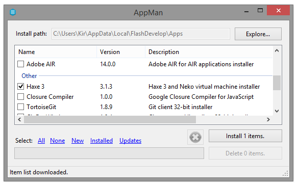
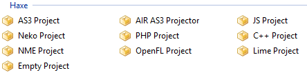

To start developing in Haxe, a few things need to be made in preparation.
The first and most obvious thing is to download and install the Haxe toolkit itself. But to be able to actually use it, you'll need an IDE (Integrated Development Environment), which is a tool for editing code, compiling and packaging your apps.
There are several IDE with Haxe support that you can use.
You can find the official list of available editors here.
I personally use Flash Develop and strongly recommend it. The editor is very light-weight, has a lot of useful and intuitive tools, and supports multiple languages natively, including Haxe.
If you decide to use Flash Develop, you don't need to manually install Haxe. Otherwise, head to the official Haxe download page and grab and install the latest package.
In case you're going with Flash Develop, download and install it now.
On first launch, Flash Develop will ask you what SDK to download. Here you can select Haxe and it will be downloaded and installed for you. If you miss this step, you can later go to the Tools menu in Flash Develop, select Install Software and find the SDK there.
At this point you'll be able to create and compile pure Haxe projects. If you go to the Project menu and select New Project, you can see all the available options for Haxe projects.
You'll notice a number of templates for different kinds of applications, among them you'll find a Neko Project template. Neko is a lightweight runtime made by the same guys who created Haxe. It is especially useful for debugging, since the compilation time is fast. Flash Develop may ask you specifically whether you want to install Neko together with Haxe, you should agree.
Next thing, you'll need to install lime. Lime is an abstraction layer that makes cross-platform possible. It comes with lime tools which make it very easy to install new compilers and frameworks.
Once you have Haxe and Neko installed, open your command prompt/terminal and run the following commands:
haxelib install lime
haxelib run lime setup
As I mentioned in the first introductory post, OpenFL is one of the most popular frameworks for Haxe, which provides an easy and powerful graphics API to work with. Let's install it too. This is very easily done using the command line:
lime install openfl
Done! Now you can go to Flash Develop, create a new OpenFL Project and test it. To run the project, find the build configuration bit in the toolbar and choose either flash, html5 or neko compiler targets.
If all was installed correctly, you'll end up with a blank application with black background. Congratulations!
The other compiler targets, however, will not work yet. They all have to be installed first (using lime) and each of them has specific requirements.
To be able to compile executable programs for Windows, for example, a compatible version of Visual Studio C++ has to be installed. Fortunately, lime makes most of these things as easy as possible, so you'll just have to run:
lime setup windows
The requirements, Visual Studio Express in this case, will be installed for you (there will be a prompt asking you whether you want to install it or not).
Unfortunately, to be able to compile for Windows, you need to compile your program from a Windows machine. This applies to other platforms too - to be able to compile to Mac or IOs, you'll need to do it from a Mac and have XCode installed.
For a full list of platforms and their requirements, you can look at the official OpenFL documentation.
You usually wouldn't debug using these compile targets, though. When debugging it is best to use the fastest compiler, which is either neko or flash.
Now we have Haxe installed, an IDE to work in, and even the OpenFL framework to utilize. We're ready to delve into actual coding! You can explore the categories to find specific tutorials, or move on to the next tutorial to learn about OOP syntax in Haxe.